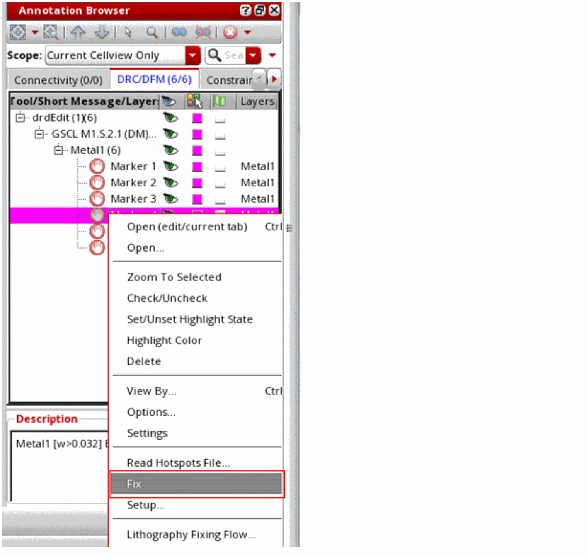

Resolving HCL Conflicts through the Annotation Browser
You can resolve HCL conflicts using Annotation Browser. You can resolve the errors one at a time or as a group.
- Select the conflict or group of conflicts in the Annotation Browser.
-
Select Fix from the context-sensitive menu.

After the fix, HCLs at the current editing level are cleared and the marker is deleted. For HCLs inside the hierarchy, a message is printed in the CIW specifying the resolution of the error. However, in this case, the marker is not deleted.
For a video overview of this feature, see Using the Hierarchical Color Locking Check on Cadence Online Support.
Return to top